| 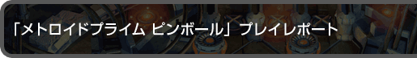 | 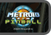 |
|
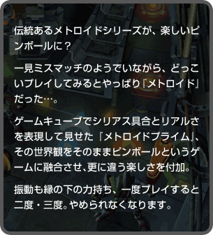 |
 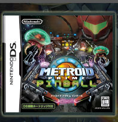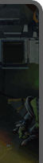
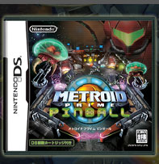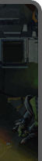| 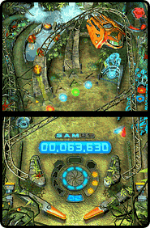DSの２画面は、そのまま縦に繋がってピンボール台に見立てているようで、操作性はどんなもんでしょう？ ということで、LRボタンで左右のフリッパーをバタバタ。ついでに下画面をタッチして動かすと、画面が左右に揺れてモーフボールになったサムスの軌道を微妙にずらして操作することが出来ます。以上の非常に単純な操作のおかげで、特になにも考える必要ナシ。早速マルチミッションからスタートです。 世界観を演出するシリアスな音楽に乗って、モーフボールを弾きます。モーフボールが通過する箇所によって、ミニゲームが開始されたり、スキャンソーサーによって機能が付加されることも。モーフボールの軌道を上手く利用したい所ですが、これらは相当慣れないと狙って打てませんし、狙って打っても微妙にずれます。さてどうすれば…と思うより、とにかく落とさないことに集中。気を抜くと、意外な方向に飛んでいくことも。 |
 上画面にある、ホログラム映像のある箇所にボールが当たって、ミニゲームが開始。あれよあれよという間にサムスが人型に戻って『ストライカーシューティング』がスタートしました。わらわらと現れる敵を全て撃てばOK、これは向きを上手く変えればいいだけなのでクリアー。 上画面にある、ホログラム映像のある箇所にボールが当たって、ミニゲームが開始。あれよあれよという間にサムスが人型に戻って『ストライカーシューティング』がスタートしました。わらわらと現れる敵を全て撃てばOK、これは向きを上手く変えればいいだけなのでクリアー。ほかにもボールが２個になる『フェイゾンマルチボール』や、場面が変わって左右にジャンプする『ウォールジャンプ』などなど、ミニゲームの類は全部簡単操作です。ただ、どこに飛ばすかコントロールが難しいので、意図的にミニゲームを出現させるにはそれなりの腕が必要かも？数あるミニゲームのなかで一番お気に入りなのは、出現するパラサイトにボールを当てる『パラサイト』。こちらを攻撃することもないので、あまり焦らずプレイできるのが安心です。 |
| 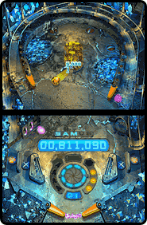機能のなかで一番いいなーと思ったのは、スキャンソーサーで出現する『フォースフィールド』。フリッパーの下にボールが落ちないよう、ガードされるのです。地味に見えても、結果的に一番効率が良いのがコレ。ボス戦など、神経を使う箇所でも後方支援のような安心感がありました。 例えアーティファクトを取れなくても、とにかく打てば響くような仕掛け満載。気付けばミッションオーバーしてもピンボールという気軽さから、ガックリしつつもついつい繰り返して遊んでしまう不思議な魅力でいっぱいです。 台に慣れるため、シングルミッションで何度かプレイしてから、マルチミッションにチャレンジ…という手順も踏みつつ遊びましたが、遊び方のヒントなどは現地制作スタッフがインタビューで触れています。ぜひご参考に。 |
| 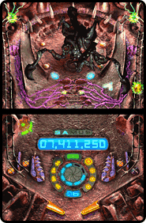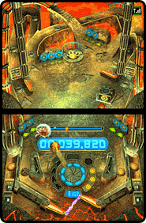 |